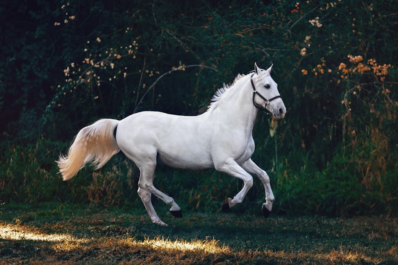
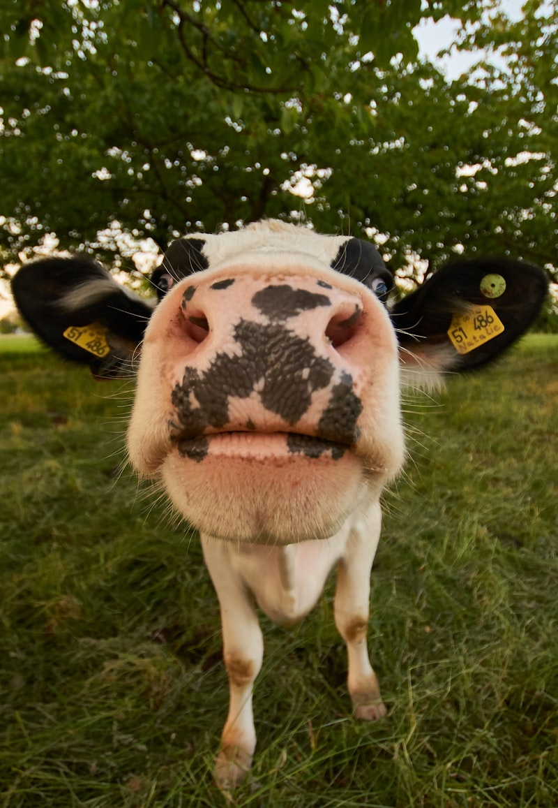

By SCWS Team
February 1, 2026 · 14 min read
It's a scorching August afternoon in Valley Center, and your horses have been grazing all day. Each one needs 20+ gallons of water just to make it through tonight—and that's before factoring in your cattle, goats, and the chickens scratching around the barn. Now multiply that by every single day of the year.
For ranchers and hobby farmers across Southern California, a reliable livestock well water supply isn't just convenient—it's the difference between a thriving operation and a devastating emergency. This comprehensive guide covers daily water needs by animal type, water quality requirements, well sizing calculations, and backup systems that could save your herd when things go wrong.
Quick Facts: A single horse needs 10-15 gallons daily, while a beef cow requires 30-50 gallons. During summer heat, these amounts can double. A well serving livestock should produce at least 1-2 GPM per large animal, with storage capacity for 3-7 days of emergency supply.
Water Needs by Animal Type
Different livestock species have vastly different water requirements. Understanding these needs is the first step in designing an adequate farm well water system. The following sections break down consumption by animal type, including factors that affect daily intake.

Horse Water Requirements
Horses are particularly sensitive to water quality and availability. Dehydration can quickly lead to colic—a leading cause of equine mortality. Meeting horse water requirements should be a top priority for any equine facility.
- Base consumption: 10-15 gallons per day for an average 1,000 lb horse
- Hot weather: 15-25 gallons per day when temperatures exceed 85°F
- Working horses: 20-25+ gallons daily during heavy training or work
- Lactating mares: 15-20 gallons daily to support milk production
- Foals: 5-10 gallons per day depending on age and weaning status
Sizing Example: A 10-horse boarding facility in Fallbrook needs 150-250 gallons daily under normal conditions. During August heat waves, expect 250-400 gallons. A well producing 5 GPM can supply 300 gallons per hour, meeting peak demand with just 1-2 hours of pumping daily. However, accounting for pasture irrigation and facility cleaning, most horse properties benefit from 10-15 GPM capacity.
🐴 Equine Health Tip
Horses should never go more than 4 hours without access to water. Even brief dehydration increases colic risk significantly. Consider installing automatic waterers with float valves that maintain constant water levels.
Cattle Well Water Requirements
Cattle operations—whether beef or dairy—require substantial water volumes. Cattle well water demands are among the highest of any livestock, making proper well sizing critical for ranch profitability.
Beef Cattle
- Mature beef cow: 30-50 gallons per day
- Bulls: 40-60 gallons per day
- Calves (weaned): 10-15 gallons per day
- Nursing cow with calf: 50-70 gallons per day combined
- Hot weather increase: 50-100% above baseline consumption
Dairy Cattle
- Lactating dairy cow: 35-50 gallons per day
- High-producing dairy cow: 50+ gallons per day
- Dry cow: 15-25 gallons per day
- Dairy cleaning operations: Add 10-15 gallons per cow daily
Ranch Calculation: A 50-head beef cattle operation in Ramona requires approximately 1,500-2,500 gallons daily. During summer months, peak demand may reach 4,000+ gallons. A well producing 30-50 GPM can meet this demand while allowing adequate aquifer recovery time.

Goat Water Requirements
Goats are increasingly popular on Southern California properties for both dairy production and vegetation management. While smaller than cattle, their water needs shouldn't be underestimated.
- Adult meat goats: 2-4 gallons per day
- Dairy goats (lactating): 4-6 gallons per day
- Pregnant does: 3-5 gallons per day
- Kids: 1-2 gallons per day
- Bucks: 3-5 gallons per day
Goats are notoriously picky about water quality—they'll often refuse to drink stale, warm, or contaminated water even when thirsty. Ensure fresh water delivery systems for goat operations.
Chicken and Poultry Water Requirements
While individual chickens drink relatively little, commercial or backyard flocks can add significant water demand to your property.
- Laying hens: 0.5-1 pint (0.25-0.5 gallons) per day each
- Broiler chickens: 0.5-0.75 pints per day each
- Turkeys: 1-1.5 pints per day each
- Ducks: 0.5-1 pint per day each (plus bathing water)
- Hot weather: Consumption increases 50-100%
Flock Calculation: A 100-bird laying flock needs 25-50 gallons daily. This is relatively modest, but poultry operations often require additional water for cleaning, egg washing, and cooling systems during extreme heat.
Pig Water Requirements
Pigs consume surprisingly large volumes of water, especially in warm climates where they also use water for cooling (they can't sweat).
- Finishing pigs (150-250 lbs): 3-5 gallons per day
- Breeding sows: 5-8 gallons per day
- Lactating sows: 8-10+ gallons per day
- Boars: 5-8 gallons per day
- Piglets: 0.5-2 gallons per day depending on age
Note: Pigs also need water for wallows during hot weather—a cooling wallow for a small pig operation may use 50-100 additional gallons daily during summer.
Daily Water Consumption Reference Table
Use this comprehensive table to calculate your total daily water requirements:
| Animal Type | Normal (gal/day) | Hot Weather (gal/day) | Lactating (gal/day) |
|---|---|---|---|
| Horse (1,000 lbs) | 10-15 | 15-25 | 15-20 |
| Beef Cattle | 30-50 | 50-80 | 50-70 |
| Dairy Cow | 35-50 | 50-70 | 50+ |
| Goat (dairy) | 3-4 | 5-7 | 4-6 |
| Goat (meat) | 2-4 | 4-6 | 4-5 |
| Sheep | 2-4 | 4-6 | 4-5 |
| Pig (finishing) | 3-5 | 6-10 | 8-10 |
| Chicken (laying hen) | 0.25-0.5 | 0.5-0.75 | N/A |
| Turkey | 0.5-0.75 | 0.75-1.0 | N/A |
| Llama/Alpaca | 2-5 | 4-8 | 5-8 |
Water Quality Requirements for Livestock
While livestock can generally tolerate lower water quality than humans, poor water quality affects animal health, production, and reproduction. Understanding acceptable ranges helps you determine if treatment systems are needed.
Total Dissolved Solids (TDS)
TDS measures the total mineral content of water. Livestock tolerances vary by species:
- Poultry: Less than 2,500 ppm (ideal under 1,000 ppm)
- Pigs: Less than 4,000 ppm
- Horses: Less than 6,500 ppm
- Cattle: Less than 7,000 ppm (dairy prefer under 3,000 ppm)
- Sheep/Goats: Less than 5,000 ppm
⚠️ Water Quality Alert
Water with TDS above 10,000 ppm is dangerous for all livestock and should not be used without treatment. Many Southern California wells have elevated TDS—always test before using for animals. Annual testing is essential.
Nitrates
Nitrate contamination is a serious concern, especially in agricultural areas with fertilizer use:
- Safe level: Under 100 ppm nitrate (or 23 ppm nitrate-nitrogen)
- Caution level: 100-300 ppm—may cause problems in young or stressed animals
- Dangerous: Above 300 ppm—can cause nitrate poisoning, especially in cattle
- Symptoms: Rapid breathing, weakness, brown blood, sudden death
Learn more about testing and treating well water contaminants.
Other Quality Factors
- Sulfates: Under 1,000 ppm (high levels cause diarrhea)
- Iron: Under 0.3 ppm preferred (higher levels affect taste, not health)
- pH: 6.0-8.5 acceptable range
- Bacteria: Coliform should be absent; some livestock tolerate low levels
- Hardness: Livestock generally unaffected by hard water
Sizing Wells for Animal Operations
Properly sizing your livestock well water system requires calculating peak demand, not just average daily use. Here's a systematic approach:
Step 1: Calculate Total Daily Demand
Add up water requirements for all animals using the table above. Include:
- All livestock at hot-weather consumption rates
- Facility cleaning (barns, milking parlors, etc.)
- Pasture/arena irrigation if applicable
- Domestic household use (300-500 gallons/day)
- Fire suppression reserve in rural areas
Step 2: Determine Required Flow Rate
Formula:
Required GPM = (Total Daily Gallons × 1.5) ÷ (Pumping Hours × 60)
The 1.5 multiplier provides a buffer for peak demand periods and system losses.
Example: Mixed Livestock Property
Property inventory:
- • 6 horses @ 20 gallons = 120 gallons
- • 15 cattle @ 50 gallons = 750 gallons
- • 25 goats @ 5 gallons = 125 gallons
- • 50 chickens @ 0.5 gallons = 25 gallons
- • Household use = 400 gallons
- • Facility cleaning = 200 gallons
- Total: 1,620 gallons/day
Calculation: (1,620 × 1.5) ÷ (8 hours × 60) = 5 GPM minimum
Recommended: 8-10 GPM for comfortable margin and future expansion
For more information on well capacity, see our guide on well depth and yield in San Diego County.
Storage and Distribution Systems
Even with adequate well production, proper storage and distribution infrastructure is essential for livestock operations.
Water Storage Tanks
Storage tanks provide critical benefits for livestock operations:
- Buffer capacity: Handles peak demand without running the pump continuously
- Emergency reserve: Provides water during pump failures or power outages
- Well protection: Allows adequate aquifer recovery between pumping cycles
- Pressure equalization: Maintains consistent flow to distant waterers
Recommended Storage Capacity
| Operation Size | Daily Use | Minimum Storage | Ideal Storage |
|---|---|---|---|
| Small (5-10 horses) | 150-300 gal | 500 gallons | 1,500 gallons |
| Medium (20-30 cattle) | 800-1,500 gal | 2,500 gallons | 5,000 gallons |
| Large (50+ cattle) | 2,000-4,000 gal | 5,000 gallons | 10,000+ gallons |
| Mixed operation | Varies | 3 days supply | 7 days supply |
Distribution Systems
Getting water from your well to your animals efficiently requires proper distribution planning:
- Automatic waterers: Maintain fresh water while reducing waste and labor
- Freeze-proof hydrants: Essential in areas with winter freezing
- Gravity-fed systems: Reliable and energy-free if terrain allows
- Pressure tanks: Maintain consistent pressure across the property
- Float valves: Automatically refill troughs without overflowing
Read our guide on pressure tank systems to understand water distribution components.
Seasonal Demand Variations
Water consumption varies dramatically with seasons, affecting how you size and operate your well system:
Summer Peak Demand
- Temperature effect: Consumption increases 50-100% when temperatures exceed 90°F
- Peak months: July-September in Southern California
- Additional uses: Misting systems, dust control, cooling ponds
- Aquifer stress: Water tables typically lowest in late summer
Winter Considerations
- Reduced consumption: Animals drink 25-40% less in cool weather
- Freeze protection: Insulate pipes and waterers in frost-prone areas
- Shorter pumping cycles: Good time for well recovery
- Maintenance window: Ideal season for well and pump service
Breeding Season Adjustments
- Pregnant animals: Water needs increase 20-30% in late gestation
- Lactation: Peak water demand—plan for 50-100% increase
- Weaning: Young animals transitioning to water need reliable access
Review our seasonal well maintenance guide for preparing your system year-round.
Backup Water Considerations

Livestock cannot survive more than 2-3 days without water. Every livestock operation needs a backup water plan.
🚨 Emergency Preparedness
Keep water delivery company phone numbers posted in your barn. Know your daily water requirements by heart. Test your backup generator monthly. When a pump fails on a Friday night, you need to act fast.
Backup Power Options
- Portable generator: 5,000-10,000 watts for most residential well pumps
- Automatic standby generator: $5,000-$15,000 installed, activates automatically
- Solar-powered pump: Independent of grid power, ideal for remote pastures
- Hand pump: Emergency backup for shallow wells (under 200 feet)
Secondary Water Sources
- Second well: Ultimate backup, connects to same distribution system
- Municipal connection: Emergency hookup to city water if available
- Water hauling: Identify water delivery services in advance
- Stock ponds: Seasonal backup, may need treatment
- Neighbor agreements: Mutual aid arrangements for emergencies
Emergency Tip: Keep phone numbers for local water hauling companies posted in your barn. Water delivery costs $150-$400 per load (2,500-4,000 gallons), but it's a lifeline during pump failures or drought emergencies.
Common Problems with Livestock Wells
Livestock operations put unique demands on well systems. Watch for these common issues:
Insufficient Yield During Peak Demand
- Symptoms: Pump runs constantly, water pressure drops, troughs run dry
- Causes: Undersized well, declining aquifer, summer drawdown
- Solutions: Add storage tanks, deepen well, drill second well, reduce herd size
Water Quality Degradation
- Symptoms: Animals refuse water, reduced production, health issues
- Causes: Bacterial contamination, mineral infiltration, surface water intrusion
- Solutions: Shock chlorination, well rehabilitation, install treatment systems
Pump Failures
- Symptoms: No water, pump runs but doesn't produce, cycling on/off
- Causes: Motor burnout, worn impellers, electrical issues, sand damage
- Prevention: Annual inspections, proper sizing, sand screens
If you're experiencing issues, see our troubleshooting guide for wells that stop producing water.
Contamination from Livestock Operations
- Risk factors: Well too close to corrals, manure piles, or feeding areas
- Prevention: Maintain 100+ foot setbacks from animal concentration areas
- Detection: Annual bacteria and nitrate testing
- Remediation: May require well modification or relocation
Frequently Asked Questions
How much water does a horse need per day from a well?
Horses typically need 10-15 gallons of water per day under normal conditions. During hot weather, heavy work, or lactation, this can increase to 20-25 gallons daily. A well for a single horse should produce at least 1 GPM, while a small ranch with 5-10 horses needs 5-10 GPM minimum to meet daily demands with adequate recovery time.
What GPM well do I need for cattle?
For cattle operations, plan for 1-2 GPM per head of cattle. A small herd of 20 beef cattle requires a well producing at least 20-30 GPM. Dairy cattle need more water—up to 50 gallons per cow daily—so a 50-head dairy operation may need 75-100 GPM capacity, especially during summer months when consumption peaks.
Is well water safe for livestock?
Well water is generally safe for livestock, but should be tested annually for nitrates, bacteria, TDS (total dissolved solids), and sulfates. Livestock can tolerate higher TDS levels than humans (up to 5,000-7,000 ppm for cattle), but high nitrates above 100 ppm can cause health problems. Iron and sulfur, while affecting taste, are usually not harmful to animals.
How do I size a well for a small ranch with mixed livestock?
Calculate total daily water needs by adding requirements for each animal type, then divide by available pumping hours to get required GPM. For example: 5 horses (75 gal) + 10 cattle (400 gal) + 20 goats (60 gal) + 50 chickens (12.5 gal) = 547.5 gallons daily. Pumping 4 hours/day requires approximately 2.3 GPM minimum. Add 50% buffer for peak demand, so target 5 GPM.
What backup water supply do I need for livestock?
Livestock operations should maintain 3-7 days of water storage as backup. For 20 cattle (800 gal/day), this means 2,400-5,600 gallons of storage. Options include above-ground poly tanks ($1-2/gallon capacity), concrete cisterns, or multiple wells. Also consider a backup generator for your well pump—livestock cannot survive more than 2-3 days without water.
Need a Well for Your Livestock Operation?
Every ranch and farm has unique water requirements. Whether you're establishing a new horse property, expanding your cattle operation, or need a more reliable water supply for your existing livestock, we can help design and drill a well system matched to your specific needs. With decades of experience serving Southern California's agricultural community, we understand the critical importance of dependable livestock water. Visit our well drilling services page to learn more.